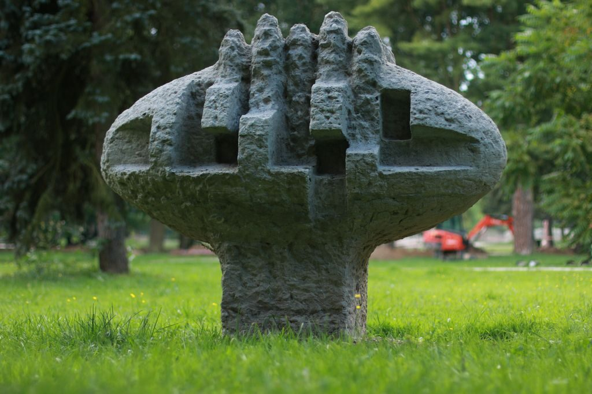
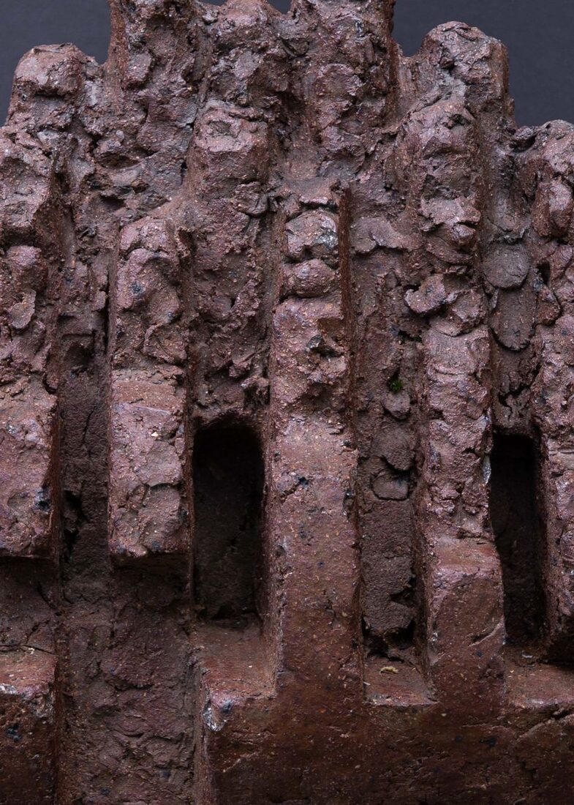
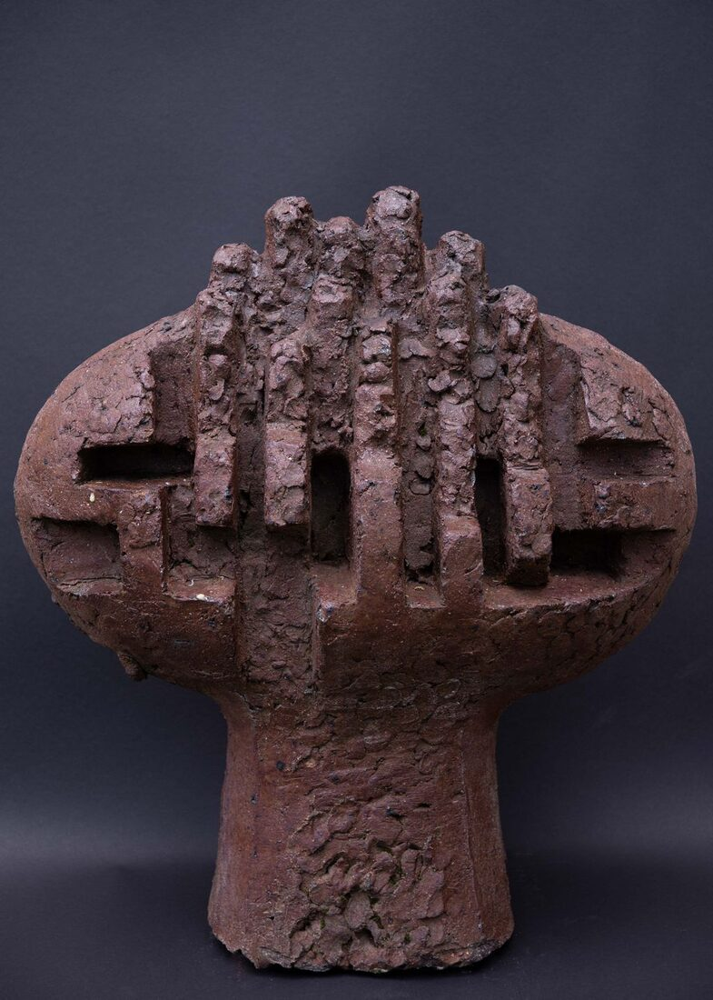

Rzeźba Drzewo genealogiczne w Alei Stanisława Strzyżyńskiego
Nagranie
Rozwiń transkrypcję
Rzeźba plenerowa Drzewo genealogiczne powstała w 1977 roku w ramach pleneru rzeźbiarskiego, który ojciec organizował wspólnie z Jarosławem Olejnickim, artystą malarzem.
Rzeźba symbolizuje powstanie życia. Z owalnej formy wyłaniają się zgeometryzowane kształty, symbolizujące ludzi i powstawanie nowego życia, wyrastającego jednak z pewnej podstawy, z dziedzictwa poprzednich pokoleń.
Zachowało się kilkanaście projektów rzeźby Drzewo genealogiczne. Tę rzeźbę wykonywaliśmy razem, w naszym ogrodzie, obok pracowni. Wykonywaliśmy model z gliny, a następnie odlew w sztucznym kamieniu. Miejsce dla rzeźby ojciec wybrał sam, szukając w parku najlepszego otoczenia. Jest ona usadowiona na tle świerków, przy alei.
Z naszej inicjatywy Rada Miejska podjęła uchwałę o nadaniu tej alei imienia Stanisława Strzyżyńskiego. Uroczyste otwarcie odbyło się w czerwcu 2026 roku. Jest to ważny moment uczczenia pamięci ojca i początek dostrzegania artystów związanych z Nałęczowem.
Drzewo genealogiczne to abstrakcyjna, organiczna forma rzeźbiarska powstała w 1977 roku, wykonana ze sztucznego kamienia. Owalny kształt rzeźby symbolizuje ziarno, z którego kiełkuje nowe życie. Całość przypominająca rozgałęziające się drzewo można odczytać jako symbol więzi rodzinnych, ciągłości pokoleń i splatających się losów ludzkich.

Rzeźba powstała podczas pleneru zorganizowanego przez Stanisława Strzyżyńskiego i Jarosława Olejnickiego, prezesa Towarzystwa Przyjaciół Nałęczowa. Wzdłuż alei stoją tablice przedstawiające biografię artysty.

Rzeźba stoi przy Alei Stanisława Strzyżyńskiego w Parku Zdrojowym.

Jak dojść
Mini-mapa jest obecnie niedostępna.